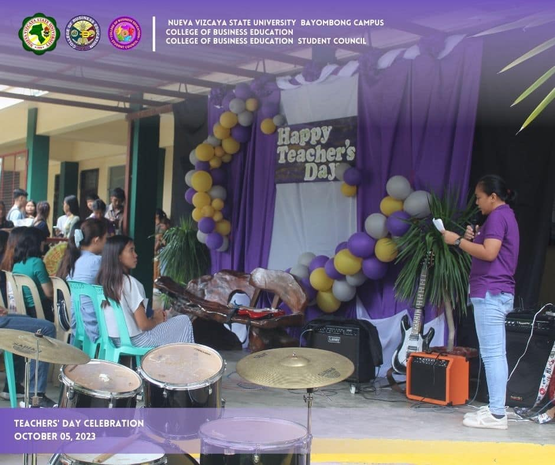
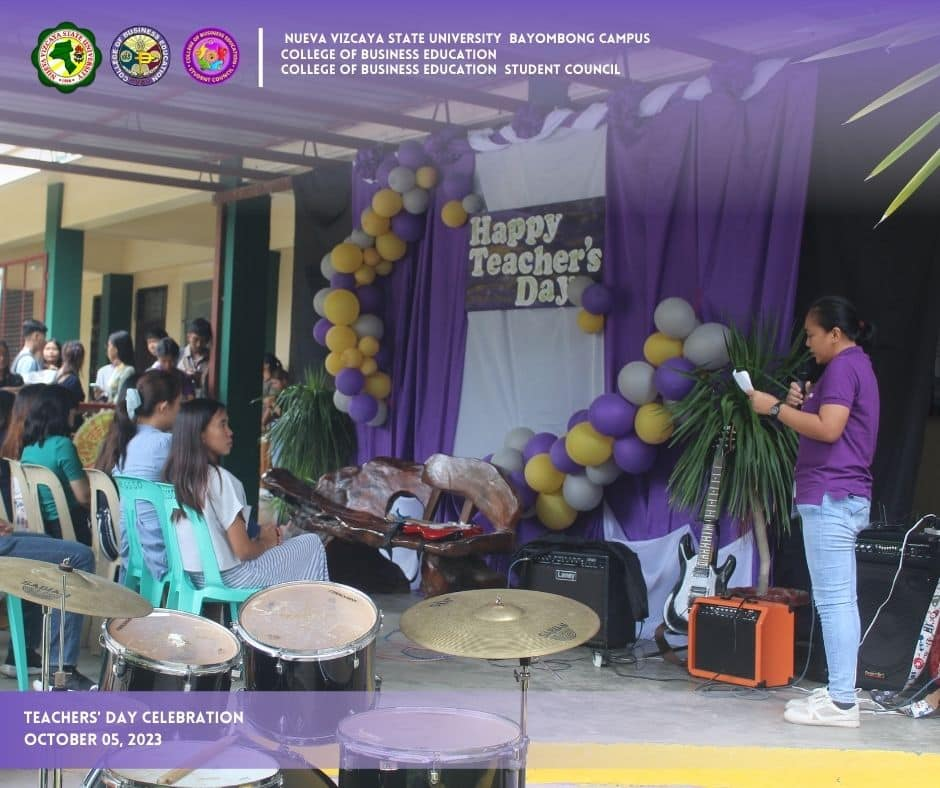

|
By CBESC - NVSU Bayombong || Date Posted: October 5, 2023
 

The College of Business Education held its Teachers' Day program filled with gratitude towards our amazing educators.
A significant part of the program was dedicated in honoring the teachers wherin the different student organizations of CBE, as well as the CBEshies, showed their appreciation by giving tokens and messages.
Our beloved teachers, your impact on our lives goes beyond the classroom. You shape not just our minds but also our character. Thank you for being our mentors, our guides, and our best friends.
 |
Nueva Vizcaya State University College of Business Education |
Pages |
|
Web Developers
This website is made for academic purposes only. |